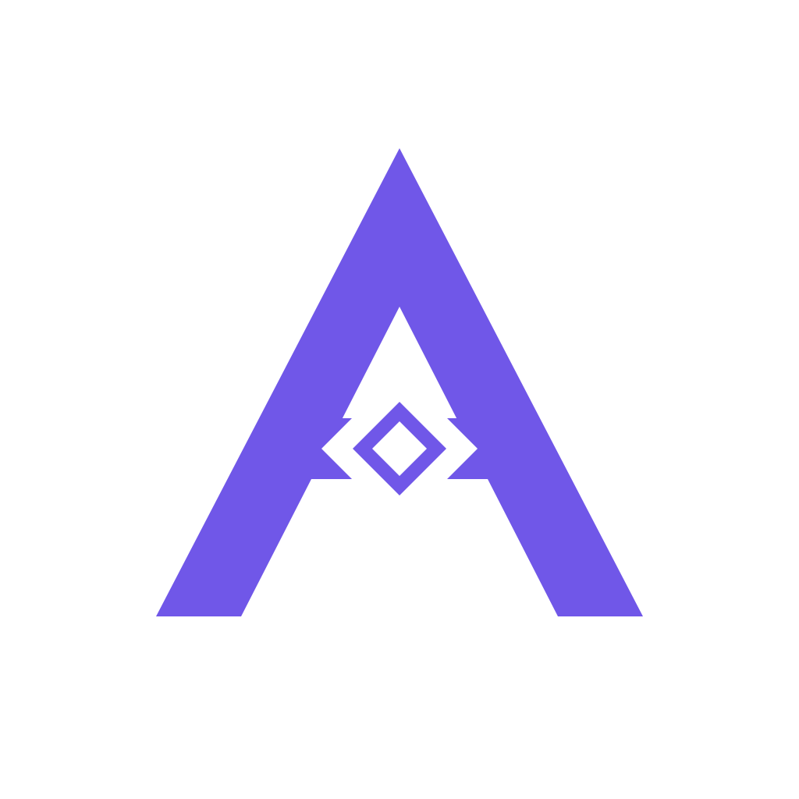

Connect your wallet.
Sign in and link a Solana wallet to your AUVEN profile.

AUVENSee what AUVEN does today and where we are taking it: create and control agents, verify their activity, add useful $AUVEN payments, and let creators offer their agents to others.
Connect agents, set limits, review requests, and export signed activity records. Link a Solana wallet to check its $AUVEN balance and sign a holder snapshot for an agent. The roadmap below shows how these foundations lead to paid usage and agent rental.
AUVEN reads your linked wallet balance without moving or locking your tokens.
Sign in and link a Solana wallet to your AUVEN profile.
AUVEN reads the $AUVEN balance at a recorded Solana slot.
Choose a registered agent. AUVEN signs the wallet, balance, mint, and observed slot with ML-DSA-65.
Start with agent identity, policy, and verifiable records. Add agents created in AUVEN, paid usage, and a marketplace where creators can let others use their agents. Each step gives $AUVEN a specific role in the product.
Register an agent you already run. Send supported requests through AUVEN to apply daily limits and owner approval. Inspect activity, export ML-DSA-65 signed records, and publish a proof commitment when configured.
Define a text agent's job and instructions, set its limits, and try it from the dashboard. Use its AUVEN credential through the supported MCP tool or API. More agent types and external tools are in development.
Teams that need more controlled requests or higher limits could buy additional capacity. Eligible $AUVEN holders could receive a defined allowance. We will show the price, quota, and eligibility rules before either feature opens.
A creator could publish an agent with a clear description, usage price, and allowed actions. Another user could pay per run or for a period of access. AUVEN would enforce the creator's limits, track each run, and separate the creator payout from its platform fee.
We plan to allocate a defined part of AUVEN's own service fees to buy $AUVEN and burn the purchased tokens. Creator earnings would stay separate. The allocation, timing, and transaction records will be published before this starts.
The creator keeps the agent's instructions and policy in their workspace. A customer sees the terms before paying. Each permitted run goes through AUVEN, where usage can be measured and the fee accounted for.
Illustrative roadmap, not a live checkout. Rental prices, token payment rules, creator payouts, and buyback allocation have not been set.
Agent passports, activity checkpoints, and holder proofs use ML-DSA-65 signatures that you can export and verify. A separate Solana transaction can record a proof commitment when publication is configured.
Open ProofsThis is the mint AUVEN reads for wallet balances. A holder proof is a signed snapshot of the amount observed at one Solana slot; it does not move tokens or guarantee a later balance.